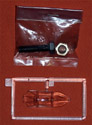
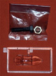

|

Fine Molds 1/48 Nakajima J9Y Kikka "Orange Blossom"
Kit #FA-14
Collector’s Market Value $26.00
Images and text Copyright © 2008 by Matt Swan
Developmental Background
During WW2 Germany and Japan shared technology as demonstrated by a copy of the Daimler-Benz 601 inverted V engine showing up in the Ki-61 Tony. Other key items that were shared or attempted to be shared were pieces of turbo jet technology. At one point Germany tried to ship a complete Jumo 004 engine to Japan which fortunately never arrived. However a drawing and a few pictures of the BMW 003 turbojet engine did end up in Japanese hands. This was a crucial delivery. The Japanese military had not expressed any real interest in jet powered aircraft throughout most of the war until a Japanese emissary witnessed a demonstration of the Me-262 in Germany. This prompted development of a Japanese jet powered aircraft.
In 1944 Nakajima designers Kazuo Ohno and Kenichi Matsumura were tasked with creating a reconnaissance aircraft that would seat three crew members. As design work progressed it was discovered that the Japanese jet engine prototypes would not produce enough thrust to achieve the performance parameters. Even after several design improvements the results were not acceptable however it was at this point that the BMW 003 information came into their hands. Japanese engineers were able to manufacture a turbojet engine based on the BMW information with an excess of 1000 pounds thrust. Designated the Ne-20 this engine gave the program a critical boost and was used for the single seat prototype.
Three different versions of the aircraft were planned; a three place reccon aircraft, a two place bomber and a single seat day fighter with two 30mm cannons. All versions included folding wings to allow for concealment in caves. One single seat, unarmed prototype was completed and flown once before the end of the war. On its second attempt using RATOG bottles the take-off was aborted resulting in a crash that damaged the landing gear. Seems the technicians had not mounted the rocket bottles properly. It is a common misconception that the J9Y was a copy of the Me-262 but there is actually very little relationship other than they both had two turbojet engines slung under the wings and were jet aircraft. The J9Y was about 30% smaller than the 262 and did not have nearly the wing sweep. Ultimately Japanese turbo-jet technology had no effect on the war and simply became a historical curiosity. The single surviving example of the J9Y Orange Blossom is displayed at the Smithsonian in Washington D.C.
One observation I would like to consider is the aircraft designation "special attack" which was usually assigned to aircraft used in Kami-kazi attacks. It would make no sense (to me) to spend such a huge amount on research and development, testing and pilot training to create a single use weapon such as this aircraft. It required considerably greater training to produce a pilot that could even get this type of aircraft off the ground much less reach an intended target which makes me think the "special attack" designation had more to do with the development and use of turbojet technology and not suicide attacks.
The Kit
Originally released in 1995 and again briefly in 2003 the Fine Molds Kikka is an interesting kit. Fine Molds has a reputation already for making nicely engineered kits which tend toward the higher end of the price range. This kit is not overly complex with only three sprues of parts done in light gray high pressure injection molding totaling only 47 pieces and a single clear part. The primary kit parts are nice looking with smooth surface texture and finely engraved panel lines. There are several sink marks in sensitive areas like two along the right side outer fuselage and a couple on the nose gear door. I filled these with some Mr. Surfacer 500 and sanded them smooth. The parts images have some of these sink marks highlighted. There is not flash evident on the parts and mold separation seams are negligible. The canopy is a single piece for closed display only. It does demonstrate well defined frame lines and good clarity. If you are handy with a JCL Razor Saw you could cut this apart for open display. Keep in mind that the Kikka canopy slid back and did not open like the Me-262 canopy.
Interior detail is pretty good with some lightly raised instrument panel detail supplemented by a decal. The seat does not include any seatbelts and should you decide to add these from an aftermarket set I believe this would only have had lap belts. Other interior detail is good such as separate rudder pedals and some internal framing. Landing gear are nicely done however the main gear bays are very shallow. The Ne-20 engines are well done with good intake and exhaust detail. The kit includes a large bolt with nut to act as the nose weight and this seems to be just enough to keep the nose gear on the ground. There are no photo etched details or acetate details with the kit however it does include a small sheet of Eduard laser cut masks. Initial dry fitting suggests a general good fit.
 

You may click on these small images to view larger pictures
Decals and Instructions
Kit instructions are brief and mostly in Japanese with only a smattering of English here and there within the assembly steps. The cover panel of the three fold sheet does include a historical background section on the type in English and Japanese. Three panels consisting of about sixteen exploded views cover the construction aspect of the kit. The layout style is very reminiscent of the old Bandai instruction sheets however with careful review the modeler can assemble this kit without much difficulty. A single panel gives a three view of the model and covers general exterior painting and decal placement. While there is no paint chart within the instructions there are several color call-outs in the assembly steps that are in both Japanese and English - this is about all the English you will find besides the historical introduction.
Kit decals consist of a single small sheet with the basic Himomarus, the flap warning markings and the instrument decal. This is all accurate as far as the single prototype goes but it would have been nice to see theoretical markings for at least one aircraft in the set. Color density is good in the decals however print registry on the flap markings is slightly off. Should the modeler decide to use these it may be best to cut them apart and reassemble in sections.
Conclusions
This was a limited run kit from Fine Molds and currently can only be found from collectors or on E-Bay. The kit is fairly well done but does suffer from a few sink holes. Instructions are sufficient to get the job done and decals are accurate for the intended build. I have heard some modelers complain about poor fit at the wing to fuselage joint and at the engines but I did not find any problems there. With some careful study of the parts and adequate dry fitting before applying glue this should not present any great challenge to most modelers. There are no aftermarket items specifically intended for this kit however a set of any Japanese Army Aircraft lap belts would make a good addition. I give the kit a good recommendation.
Construction
I have had this thing collecting dust in my stash for several years and always wanted to build it. Recently that pesky Modeling Elf has been whispering sweet nothings in my ear again and I finally succumbed. As with most kits construction began with the interior. I used some Lion Roar Luftwaffe seat-belts from the PE spares box as lap belts. I also commandeered a couple of photo etched levels for the throttle quadrant.
Other than that the cockpit was built out-of-box. I used White Ensign Nakajima interior green for the base color of the interior. Most of the details were done with flat black and white for the various switches. The seat bottom was painted leather and the kit decal was used on the instrument panel. A black sludge wash was used to treat the entire interior once everything was dry.
The gear bays were airbrushed with Alclad aluminum then the fuselage was closed up with the nose weight installed above the nose gear bay. Things lined up nicely and only a little putty was needed on the ventral seam. The wing panels were glued together then the edges were sanded lightly before they were attached to the fuselage. I did have a hair thin gap along the right side between the wing and the fuselage but was able to fill that with glue. The elevators were attached next and care had to be taken with their alignment. It seemed to me that one was slightly lower than the other but the difference was negligible. Shifting over to the engines I painted the inlet cones and exhaust cones with various Alclad colors and also did the interior of the engine nacelles before assembly.
Once all the pieces of the engines were together I did find a small fit problem with one nacelle where the nose cone was slightly over-sized for the rest of the nacelle. I shaved some with a razor then lay in a bead of Mr. Surfacer 500. Once dry this was sanded and looked good. Now the installation to the wing, I remember another modeler had complained about a large gap forming at this point with both engines so a quick test fit revealed this would potentially be a problem. I inserted a small spacer rod inside the engine nacelle to spread it just a little then attached them to the wings. I ended up with virtually no gap, at least anything I could not fill with a quick application of glue. I did have a slight step from the wing leading edge to the front of each nacelle. This area was filled with Mr. Surfacer 500, sanded smooth then rescribed with my razor saw. In the following picture you can see the raw putty fill at the engine nacelle. I have also thrown in a shot of the Kikka sitting next to an Me-262 to demonstrate just how different these aircraft are.
Don’t forget, you can click on these small images to view larger pictures
After some minor touch-up work with the 600 grit sandpaper I masked off the engines and landing bays with damp tissue paper and covered the cockpit with some masking tape. I was almost ready to start painting when that bloody Modeling Elf started talking to me again. He was talking about how this must have cause general havoc within a B-29 formation pounding away with those twin 30mm cannons and I responded with "What cannons? This is a prototype." He said "Exactly, you should fix that." Damned Modeling Elf. So I hauled out my Luftwaffe 109 scribing plate, found an oblong template that would do for a cannon port and scribed some ports on the nose. Next I drilled out some angled mounting holes then drilled out some plastic rod to make gun barrels. The barrels were cut short and glued in place and this dragon had some teeth. Now maybe I can get some painting done.
12/3/08
Okay, things are moving along more normally now with engine inlets and exhausts being masked with damp tissue paper as were all the landing gear bays. Next a basic black preshade was put in place. Once the preshading was dry I applied some yellow/orange wing bands and some Mitsubishi cowl blue/black as an anti-glare panel. These areas were masked off and I was ready for some light gray on the lower surfaces. After a day of dry time I masked the lower leading edge of the wings so that the upper color could wrap around the edge and masked the fuselage sides. I thinned out some White Ensign Nakajima Navy Green and airbrushed the top surface. A small amount of the base paint was lightened with a few drops of white and the panel centers were dusted to create some sun-fade.
While paint dried on the model I attacked the landing gear. Gear struts and wheel centers were done with Alclad white aluminum. Tires were done with my tire black blend of Testors enamels. Since I had converted this to an armed aircraft I also needed to manufacture a reflective gun-sight for it. Using some pieces of Evergreen plastic stock, a few pieces of clear bubble card from a pack of batteries and a spare cross-hair from the PE graveyard I quickly put together a gun-sight. The canopy needed to be displayed in an open position so I carefully cut it apart with my JLC Razor Swan. Once cut into three sections it was polished with a dust free cloth and dipped in Future. Once dry it will be masked with strips of masking tape.
Things are moving very quickly now, the model has acquired that momentum that so often occurs and completion nears. The masks were removed and the model was sealed with Future. The decals are a combination of pieces from several sheets. I wanted a yellow theme in the markings and found a good tail marking left over from an old Otaki Ki-100 kit. It was too large for the fin of the Kikka so was cut into five pieces and reassembled on the model. Each piece was dipped in Future before being placed to prevent silvering and to avoid compatibility issues with the setting solutions. The kit Hinomarus were used but the flap markings were constructed from two other used decal sheets. The Katanas on the flap covers basically say "do not step here" (that's not a direct translation) and are read right to left on the right side but left to right on the left side. Kill markings and a few service stencils were commandeered from other sheets in the spares box and she was nearly ready for a wash. One advantage of dipping the decals in Future was not needing a second sealing coat before applying the wash.
My wash was the old standard sludge wash made from a drop of liquid soap, some black acrylic past, water and a few drops of water soluble ink. After it was in place and wiped down the model was sealed with Polly Scale clear flat. I used a couple different colors of ground pastel chalks to create gun blast stains and heat and oil damage to the engines. The gun-sight was installed using a drop of superglue then the canopy was painted and placed with clear parts cement. Lastly the landing gear and gear covers were installed and this baby was ready for display.
Now I just need to build a little vignette display base for this. More on that in a couple days.
|


{kind=link}
{kind=link}
{kind=link}
{kind=link}
{kind=link}
{kind=link}
{kind=link}
{kind=link}
{kind=link}
{kind=link}
{kind=link}
{kind=link}